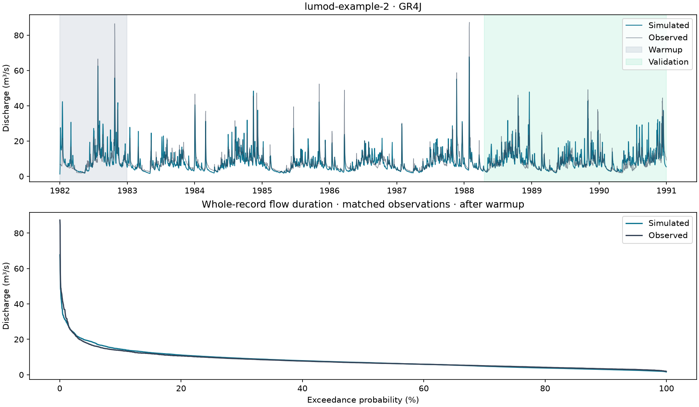

LuMod 0.1.3.0 GR4J

| Period | Metric | Value |
|---|---|---|
| Calibration | nse | 0.69362 |
| Calibration | kge | 0.83352 |
| Calibration | rmse | 3.7526 |
| Calibration | log_nse | 0.64482 |
| Validation | nse | 0.53431 |
| Validation | kge | 0.74761 |
| Validation | rmse | 4.8695 |
| Validation | log_nse | 0.56356 |
Optimizer convergence: False. Evaluations: 3000.
Convergence does not prove a global optimum or an acceptable hydrological fit. Validation is chronological. This report is not a predictive uncertainty assessment.